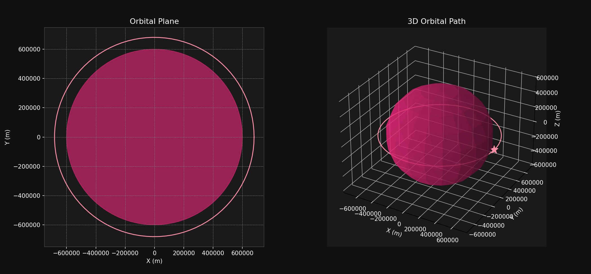

A personal project building a Python simulation environment for satellite orbits, focused on visualizing orbital parameters and paths in both 2D and 3D. The simulation uses NumPy and matplotlib for the orbital-mechanics calculations and plotting.
Calculation of orbital parameters including semi-major axis and eccentricity based on given apoapsis and periapsis altitudes.
Generation of position and velocity vectors using Keplerian orbital elements.
Visualization of the satellite's orbital plane in 2D and its orbital path in 3D.
Animation of the satellite's movement along its orbit in both 2D and 3D views.

Simulation output for the sample case in the code below. Inputs are apoapsis/periapsis altitude above the 600 km-radius body (82.1 km and 80.0 km); orbital_parameters() adds the body's radius to convert altitude to distance from its center, giving a semi-major axis ≈ 681 km (not to be confused with the ~81 km input altitude) and eccentricity ≈ 0.0016. Left: orbital plane (2D). Right: orbital path (3D), satellite marker shown at periapsis.
Click to expand
import numpy as np
import matplotlib.pyplot as plt
from matplotlib.animation import FuncAnimation
from mpl_toolkits.mplot3d import Axes3D
from satellite_orbit import orbital_parameters, true_anomaly, position_velocity, plot_orbit, plot_planet, plot_planet_2d
from satellite_parameters import print_orbital_parameters
# Constants
RADIUS_PLANET = 600_000 # meters
ALTITUDE_APOAPS = 82_109 # meters
ALTITUDE_PERIAPS = 79_987.1 # meters
# Compute orbital parameters
a, e = orbital_parameters(ALTITUDE_APOAPS, ALTITUDE_PERIAPS)
nu = true_anomaly()
# Print orbital parameters
print_orbital_parameters(a, e, np.radians(53), np.radians(0), np.radians(0), nu[0])
# Position and velocity vectors
x, y, z = position_velocity(a, e, nu)
# Create figure and subplots
fig = plt.figure(figsize=(16, 8))
fig.patch.set_facecolor('#2E2E2E')
# Create 2D and 3D subplots
ax1 = fig.add_subplot(121)
ax2 = fig.add_subplot(122, projection='3d')
# Orbital Plane Plot
plot_orbit(ax1, x, y, np.zeros_like(x), '#FF69B4')
plot_planet_2d(ax1, RADIUS_PLANET, '#FFC0CB')
ax1.set_title('Orbital Plane', fontsize=15, color='white')
ax1.set_xlabel('X (m)', fontsize=12, color='white')
ax1.set_ylabel('Y (m)', fontsize=12, color='white')
ax1.set_facecolor('#2E2E2E')
ax1.grid(True, color='gray', linestyle='--', linewidth=0.5)
ax1.tick_params(colors='white')
# 3D Plot
plot_orbit(ax2, x, y, z, '#FF69B4')
plot_planet(ax2, RADIUS_PLANET, '#FFC0CB')
ax2.set_title('3D Orbital Path', fontsize=15, color='white')
ax2.set_xlabel('X (m)', fontsize=12, color='white')
ax2.set_ylabel('Y (m)', fontsize=12, color='white')
ax2.set_zlabel('Z (m)', fontsize=12, color='white')
ax2.set_facecolor('#2E2E2E')
# Hide the panes and border around the 3D plot
ax2.xaxis.pane.fill = False
ax2.yaxis.pane.fill = False
ax2.zaxis.pane.fill = False
ax2.xaxis.pane.set_edgecolor('none')
ax2.yaxis.pane.set_edgecolor('none')
ax2.zaxis.pane.set_edgecolor('none')
# Hide the grid frame and white bars
ax2.grid(color='gray', linestyle='--', linewidth=0.5)
ax2.tick_params(colors='white')
# Adjust subplot parameters to add more padding below and to the right
fig.subplots_adjust(left=0.05, right=0.85, top=0.95, bottom=0.10, wspace=0.3)
# Initialize satellite position for animation
satellite, = ax1.plot([], [], '*', color='#FF1493', markersize=15, label='Satellite')
satellite_3d, = ax2.plot([], [], [], '*', color='#FF1493', markersize=15, label='Satellite')
def init():
satellite.set_data([], [])
satellite_3d.set_data([], [])
satellite_3d.set_3d_properties([])
return satellite, satellite_3d
def update(frame):
angle = frame / 100 * 2 * np.pi
x_sat = a * (1 - e**2) / (1 + e * np.cos(angle)) * np.cos(angle)
y_sat = a * (1 - e**2) / (1 + e * np.cos(angle)) * np.sin(angle)
z_sat = 0 # For a circular orbit in the orbital plane
satellite.set_data(x_sat, y_sat)
satellite_3d.set_data(x_sat, y_sat)
satellite_3d.set_3d_properties(z_sat)
return satellite, satellite_3d
ani = FuncAnimation(fig, update, frames=np.arange(0, 100), init_func=init, blit=True, interval=50)
plt.show()
Click to expand
import numpy as np
import matplotlib.pyplot as plt
from mpl_toolkits.mplot3d import Axes3D
# Constants
G = 6.67e-11
MASS_PLANET = 5.2915158e22
MU = G * MASS_PLANET
def orbital_parameters(altitude_ap, altitude_pe):
radius_planet = 600_000 # meters
RA = radius_planet + altitude_ap
RP = radius_planet + altitude_pe
a = (RA + RP) / 2.0
e = (RA - RP) / (RA + RP)
return a, e
def true_anomaly(steps=100):
return np.linspace(0, 2 * np.pi, steps)
def orbital_elements(a, e, nu):
P = a * (1 - e ** 2)
R = P / (1 + e * np.cos(nu))
return R
def position_velocity(a, e, nu):
R = orbital_elements(a, e, nu)
H = np.sqrt(a * MU * (1 - e ** 2))
x = R * np.cos(nu)
y = R * np.sin(nu)
z = np.zeros_like(nu)
return x, y, z
def plot_orbit(ax, x, y, z, color):
ax.plot(x, y, z, color=color)
def plot_ground_track(ax, x, y, color):
ax.plot(x, y, color=color)
def plot_planet(ax, radius, color):
u, v = np.mgrid[0:2 * np.pi:20j, 0:np.pi:10j]
xsph = radius * np.cos(u) * np.sin(v)
ysph = radius * np.sin(u) * np.sin(v)
zsph = radius * np.cos(v)
ax.plot_surface(xsph, ysph, zsph, color=color, alpha=0.6)
def plot_planet_2d(ax, radius, color):
circle = plt.Circle((0, 0), radius, color=color, fill=True, alpha=0.6)
ax.add_patch(circle)
Click to expand
import numpy as np
from satellite_orbit import orbital_parameters, true_anomaly
def print_orbital_parameters(a, e, i, omega, Omega, nu):
print(f"Orbital Parameters:")
print(f"Semi-Major Axis (a): {a:.2f} meters")
print(f"Eccentricity (e): {e:.4f}")
print(f"Inclination (i): {np.degrees(i):.2f} degrees")
print(f"Argument of Periapsis (ω): {np.degrees(omega):.2f} degrees")
print(f"Longitude of Ascending Node (Ω): {np.degrees(Omega):.2f} degrees")
print(f"True Anomaly (ν): {np.degrees(nu):.2f} degrees")
def main():
ALTITUDE_APOAPS = 550 * 1_000 # meters
ALTITUDE_PERIAPS = 550 * 1_000 # meters
i = np.radians(53) # Inclination
omega = np.radians(0) # Argument of Periapsis
Omega = np.radians(0) # Longitude of Ascending Node
a, e = orbital_parameters(ALTITUDE_APOAPS, ALTITUDE_PERIAPS)
nu = np.linspace(0, 2 * np.pi, 1)[0] # Choose a sample true anomaly for demonstration
print_orbital_parameters(a, e, i, omega, Omega, nu)
if __name__ == "__main__":
main()
Currently, I am working on the following enhancements:
Implementing perturbation models to account for gravitational influences from other celestial bodies, atmospheric drag, and solar radiation pressure.
Developing ground track visualizations to show the satellite's path over the Earth's surface.
Incorporating real-time Two-Line Element (TLE) data for accurate satellite tracking and simulation.
Optimizing the animation performance for smoother real-time visualization.
Planned future developments for the project include:
Integrating more advanced orbital mechanics models such as J2 perturbation and lunar/solar effects.
Adding interactive features for user-defined orbital parameter inputs and real-time simulation adjustments.
Expanding the simulation to include multiple satellites and potential collision detection.
Enhancing the visualization with more detailed planet models and satellite rendering.